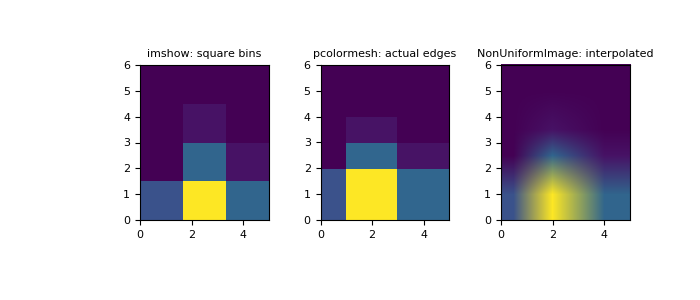

numpy.histogram2d¶
-
numpy.histogram2d(x, y, bins=10, range=None, normed=False, weights=None)[source]¶ Compute the bi-dimensional histogram of two data samples.
Parameters: x : array_like, shape (N,)
An array containing the x coordinates of the points to be histogrammed.
y : array_like, shape (N,)
An array containing the y coordinates of the points to be histogrammed.
bins : int or array_like or [int, int] or [array, array], optional
The bin specification:
- If int, the number of bins for the two dimensions (nx=ny=bins).
- If array_like, the bin edges for the two dimensions (x_edges=y_edges=bins).
- If [int, int], the number of bins in each dimension (nx, ny = bins).
- If [array, array], the bin edges in each dimension (x_edges, y_edges = bins).
- A combination [int, array] or [array, int], where int is the number of bins and array is the bin edges.
range : array_like, shape(2,2), optional
The leftmost and rightmost edges of the bins along each dimension (if not specified explicitly in the bins parameters):
[[xmin, xmax], [ymin, ymax]]. All values outside of this range will be considered outliers and not tallied in the histogram.normed : bool, optional
If False, returns the number of samples in each bin. If True, returns the bin density
bin_count / sample_count / bin_area.weights : array_like, shape(N,), optional
An array of values
w_iweighing each sample(x_i, y_i). Weights are normalized to 1 if normed is True. If normed is False, the values of the returned histogram are equal to the sum of the weights belonging to the samples falling into each bin.Returns: H : ndarray, shape(nx, ny)
The bi-dimensional histogram of samples x and y. Values in x are histogrammed along the first dimension and values in y are histogrammed along the second dimension.
xedges : ndarray, shape(nx+1,)
The bin edges along the first dimension.
yedges : ndarray, shape(ny+1,)
The bin edges along the second dimension.
See also
histogram- 1D histogram
histogramdd- Multidimensional histogram
Notes
When normed is True, then the returned histogram is the sample density, defined such that the sum over bins of the product
bin_value * bin_areais 1.Please note that the histogram does not follow the Cartesian convention where x values are on the abscissa and y values on the ordinate axis. Rather, x is histogrammed along the first dimension of the array (vertical), and y along the second dimension of the array (horizontal). This ensures compatibility with
histogramdd.Examples
>>> import matplotlib as mpl >>> import matplotlib.pyplot as plt
Construct a 2-D histogram with variable bin width. First define the bin edges:
>>> xedges = [0, 1, 3, 5] >>> yedges = [0, 2, 3, 4, 6]
Next we create a histogram H with random bin content:
>>> x = np.random.normal(2, 1, 100) >>> y = np.random.normal(1, 1, 100) >>> H, xedges, yedges = np.histogram2d(x, y, bins=(xedges, yedges)) >>> H = H.T # Let each row list bins with common y range.
imshowcan only display square bins:>>> fig = plt.figure(figsize=(7, 3)) >>> ax = fig.add_subplot(131, title='imshow: square bins') >>> plt.imshow(H, interpolation='nearest', origin='low', ... extent=[xedges[0], xedges[-1], yedges[0], yedges[-1]])
pcolormeshcan display actual edges:>>> ax = fig.add_subplot(132, title='pcolormesh: actual edges', ... aspect='equal') >>> X, Y = np.meshgrid(xedges, yedges) >>> ax.pcolormesh(X, Y, H)
NonUniformImagecan be used to display actual bin edges with interpolation:>>> ax = fig.add_subplot(133, title='NonUniformImage: interpolated', ... aspect='equal', xlim=xedges[[0, -1]], ylim=yedges[[0, -1]]) >>> im = mpl.image.NonUniformImage(ax, interpolation='bilinear') >>> xcenters = (xedges[:-1] + xedges[1:]) / 2 >>> ycenters = (yedges[:-1] + yedges[1:]) / 2 >>> im.set_data(xcenters, ycenters, H) >>> ax.images.append(im) >>> plt.show()
